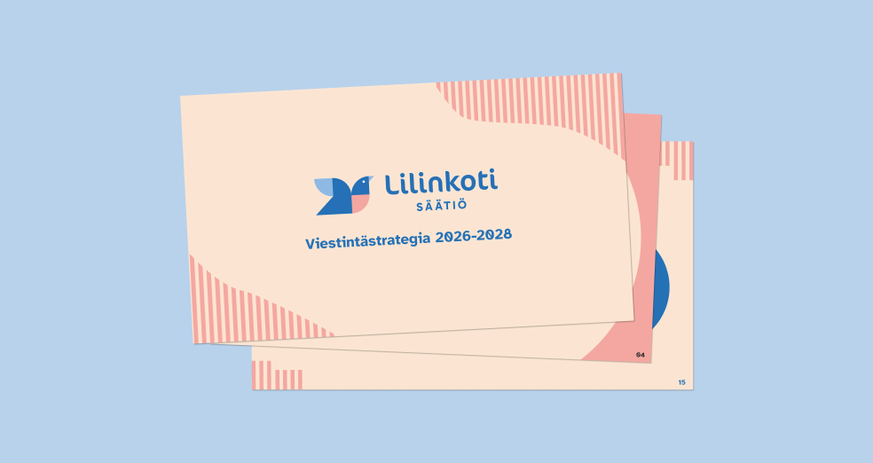
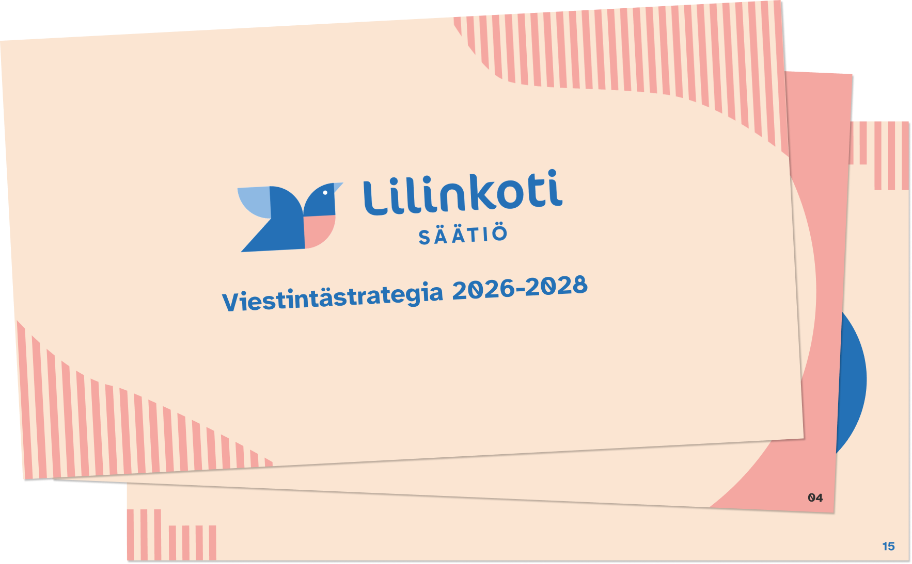
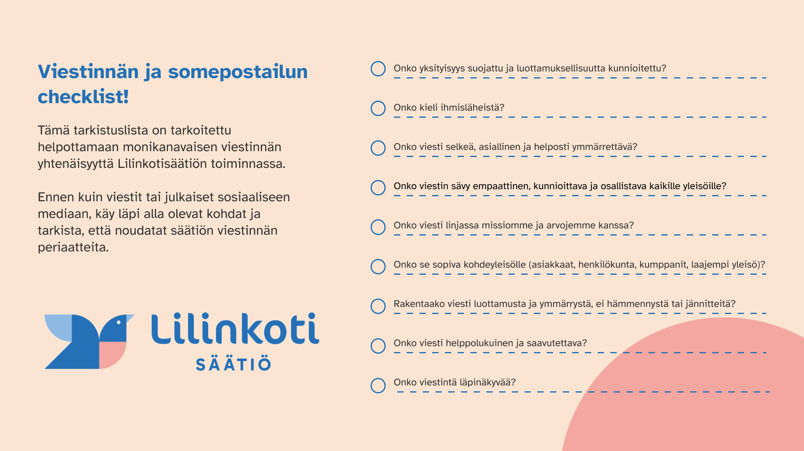

Lilinkotisäätiö
Communication strategy and guide for social media

Summary
Lilinkotisäätiö is a non-profit organization that offers social and health care housing services. In addition to housing services they provide open and recovery oriented activities for individuals recovering from mental health and substance abuse challenges.
Role
Service Designer
Timeline
6 weeks
Tools
Figma
Illustrator
Canva
Overview
The client wanted a new communication strategy for the next three years. The end-product should be an improved and updated version of the old strategy with new goals for the organization. They also asked help for their two social media channels, which are about to be combined into one.
The Challenge
How might we create a communication strategy that is easily accessible and efficient to implement for all employees inside the organization?
The Process
We began the project with reaserching and benchmarking other communication strategies and looking further into Lilinkotisäätiö's values and work. We audited their old communication strategy and social media platforms by doing SWOT-analysis and journey maps to get a good overall picture of the current situation.
Our team planned and facilitated a workshop for Lilinkotisäätiö's employees to map out their current values and goals better.

With the results of the workshop, our team started working on the new communication strategy. We also wanted to give it a more fresher look and make it easier to read. As the old version was a word document, we switched over to a slideshow, making simple and clear slides to follow.

After getting the communication stretegy together, we began to plan how to combine the two social media accounts, and how to make the feed more simple, but interesting. We designed different post templates with the brand colors and logos as well as made new versions for the open activities' weekly program posts. With the templates, we prepared a guide to make sure they're used correctly and the posted materials will be accessible.
The Outcome
In the end, we created Lilinkotisäätiö a new communication strategy for the years 2026-2028. In addition, we designed a communication and social media checklist for them to use. The checklist is a compact and fast way to make sure everything you're about to publish aligns with the organization's values.
For the social media, we created a guide for more efficient and accessible posting and created new, clearer templates for their open activities schedules and other posting.



Reflection
This project was a first time for all of our team working on a communication strategy, so we had to do a lot of research to be able to create a successful outcome. Facilitating the workshop with the employees was a great way to get more insights into the organization and we could execute the project in a short period of time.
Overall, both our team and the client were very happy with the outcome and the improvements we made. Even though doing a communication strategy was something new for us, we learned a lot and were able to incorporate our expertise on the project.